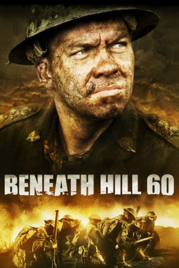

#4195 Helden von Hill 60
Alternativ: Beneath Hill 60
 
 IMDB-Wertung: 7.1 / 10
IMDB-Wertung: 7.1 / 10  Metascore: 0
Metascore: 0 
1916, Zeit für Oliver Woodward sich zu verabschieden. Statt seiner großen Liebe warten der Schlamm und Dreck des grauenvollen Kampfes an der Westfront auf den jungen Australier. Woodward und seine kleine Spezialeinheit von Mineuren arbeiten an einem weiten Netz von Tunneln – tief unter den feindlichen Linien. Mit genug Sprengstoff in der Tasche, um den Lauf des Krieges endgültig zu verändern, bereiten sie die größte Explosion der Welt vor – lautlos, denn jedes Geräusch könnte die Stellung verraten.
Jahr: 2010
Dauer: 122 Minuten
FSK: 16
Land: Australien Studio: Ascot Elite Home EntertainmentTonspuren: DTS - ,
Untertitel: Englisch,
Auflösung: 1080p (1920x800) Größe: 12492 MB
Genre: Drama, Geschichte, Krieg
Regisseur: Jeremy Sims
Drehbuch: Léonie-Claire Breinersdorfer
Soundtrack:
Darsteller:
- Alan Dukes als Jim Sneddon
 Harrison Gilbertson als Frank Tiffin
Harrison Gilbertson als Frank Tiffin Steve Le Marquand als Bill Fraser
Steve Le Marquand als Bill Fraser- Gyton Grantley als Norman Morris
- Warwick Young als Percy Marsden
- Mark Coles Smith als Billy Bacon
 Anthony Hayes als William McBride
Anthony Hayes als William McBride- Leon Ford als Lt. Robert Clayton
 Jacqueline McKenzie als Mrs. Emma Waddell
Jacqueline McKenzie als Mrs. Emma Waddell- Gerald Lepkowski als William Waddell
 Bella Heathcote als Marjorie Waddell
Bella Heathcote als Marjorie Waddell Chris Haywood als Colonel Wilson Rutledge
Chris Haywood als Colonel Wilson Rutledge- Anthony Ring als Stoat
- Mahala Wallace als Eunice
- Kenneth Spiteri als Karl Babek
 Aden Young als Major Brady North
Aden Young als Major Brady North- Thom Green als Warren Hutchings
- Dennis Kreusler als Australian Soldier on Parapet , uncredited
- Tracey Rose Sparke als Padre , uncredited
- Brendan Cowell als Oliver Woodward
- Alex Thompson als Walter Sneddon
- Duncan Young als Tom Dwyer
- Martin Thomas als Ginger O'Donnell
- Oliver Leimbach als Screaming Soldier
- Fletcher Illidge als Colin Waddell
- Morgan Illidge als Gordon Waddell
- Juliana Dodd als Isabel Waddell
- Bob Franklin als Potsy
- Nikki Fort als Mrs. Thorn
- Alice Cavanagh als Agnes
- Jessica Robertson als Dotty
- Marcus Costello als Ernst Wagner
- David Ritchie als Otto Fusslein
- John Stanton als General Lambert
- Andy Bramble als Wilf Piggott
- David Brooke-Taylor als Photographer
- Kristopher Bos als Core Soldier #4 , uncredited
- Tim Sawatzki als Lambert's Aid , uncredited
- Matthew Wollaston als British Soldier Leading Wounded , uncredited
Datei: X:\2010(G-M)\Helden von Hill 60 (2010, FSK16, 1920x800).mkv seit 29.07.2016
Festplatte: HD 2010(G-Z)-2011(A-F)
 Es gibt insgesamt 85 Filme in der Gruppe '2010(G-M)'
Es gibt insgesamt 85 Filme in der Gruppe '2010(G-M)'